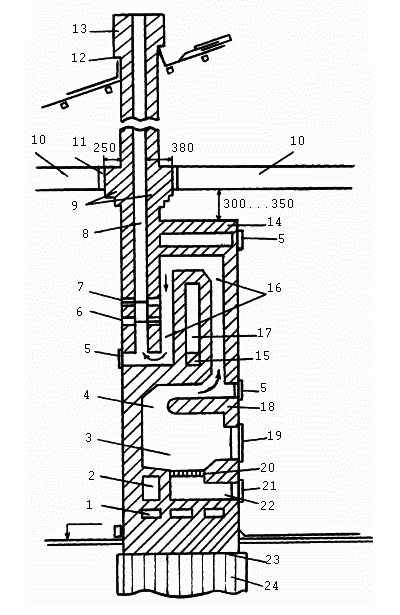
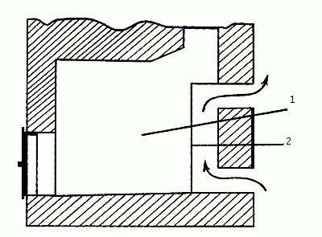
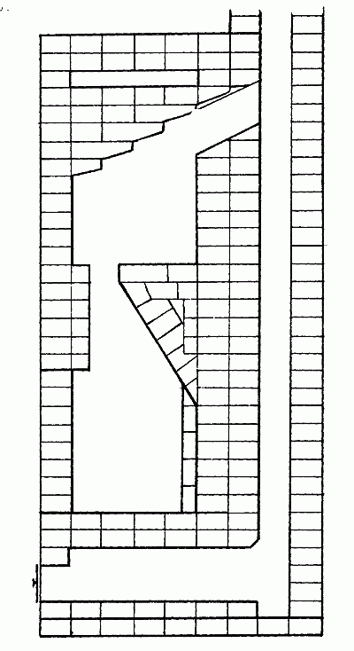

Виды печей.

Отопительная печь – бытовая печь, служащая только для обогрева помещений (рис. 1). Обычно отопительную печь располагают в передней половине дома.
К отопительным печам относят:
– голландские печи различных конструкций и размеров;
– стальные и чугунные времянки.
Голландская печь первоначально представляла собой четырехугольную отопительную печь, имеющую глухой под и шесть последовательно соединенных вертикальных дымовых каналов. В настоящее время термином «голландская печь» называют большую отопительную кирпичную печь с толстыми наружными стенками и хорошо развитыми дымооборотами. Голландские печи теплоемки и не остывают в течение длительного промежутка времени.
По толщине наружных стенок различают тонкостенные, толстостенные и комбинированные печи.
По применяемому материалу различают кирпичные, чугунные и железные печи, а также печи из жаропрочного бетона и керамики.
Калорифер – печь, предназначенная для обогревания квартир и зданий. Калорифер устанавливается в камере, устраиваемой в подвальном этаже. Принцип его работы заключается в прогревании воздуха, проходящего через камеру, до температуры, обеспечивающей его доступ на все этажи здания и во все помещения.

Рис. 1. Функциональные элементы отопительной печи: 1 – шанцы; 2 – подтопочный канал нижнего обогрева; 3 – топливник; 4 – проем в перекрытии топливника (хайло); 5 – чистки (небольшие металлические дверки); 6, 7 – задвижки; 8 – дымовой канал (дымоход); 9 – противопожарная разделка; 10 – перекрытие потолочное; 11 – теплоизоляция; 12 – выдра (выступ оголовка трубы); 13 – оголовок дымовой трубы; 14 – перекрыша; 15 – душник; 16 – конвективная система; 17 – тепловоздушная камера (открытая полость, которая обогревается дымооборотами, но не сообщается с ними); 18 – свод (перекрытие топливника); 19 – дверка топочная; 20 – решетка колосниковая; 21 – дверка поддувальная; 22 – поддувало (зольник); 23 – гидроизоляция; 24 – фундамент
Камин – открытая комнатная печь с прямым дымоходом, согревающая комнаты непосредственно пламенем горящего в ней топлива.
Мультипликатор – чугунный ребристый ящик, вставляемый в топливник в качестве его ребристых внутренних стенок (рис. 2).

Рис. 2. Мультипликатор: 1 – топливник; 2 – мультипликатор
Но в настоящее время этот прибор уже перестали употреблять, так как было доказано, что на повышение КПД печи он не влияет. Кроме того, мультипликаторы усложняют устройство печи и уход за ней, приводят к пригоранию органической пыли, повышают содержание углекислоты в воздухе до 15%.
Стенки мультипликатора, входящие внутрь топливника, сильно нагреваются и быстро отдают тепло воздуху внутри самого прибора. Мультипликатор нагревает воздух в помещении сразу же после затопки, точно так же как железная печь (времянка), и это производит обманчивое впечатление полезности прибора. Однако ухудшается работа самого топливника, так как понижается температура в нем.
Отопительно-варочная, или бытовая, печь – предназначена для отопления, а также приготовления пищи, нагревания воды и выпечки хлеба в небольших количествах. Отопительно-варочные печи имеются в кухонных плитах, духовых шкафах и водогрейных коробках. Печи, предназначенные для выпечки хлеба, имеют специальные камеры. Такие печи располагаются в одном из углов задней половины дома. К отопительно-варочным печам относят русские печи, кухонные плиты с обогревательными щитками, печи типа шведка и др.
Очаг – печь длительного горения. Очагами являются плиты, каминные и кафельные печи, камины и другие устройства, устанавливаемые в жилом помещении для сжигания природного топлива с целью обогрева.
Печь Вимана – печь, основанная на принципе противотока. Согласно этому принципу огневой канал, соединенный с топкой, отделен от оболочки печи с помощью «сухого» стыка или дымового канала; дымовые газы удаляются через дымоход в основании печи; внутри печи идущие вниз дымовые газы все время охлаждаются, а воздух поднимается вверх с наружной стороны печи и нагревается. Печи Вимана обеспечивают равномерную и эффективную циркуляцию теплого воздуха в помещении.
По мере усовершенствования конструкций печей, действующих по принципу противотока, в конце ХIХ – начале ХХ века были разработаны вертикальные и кафельные печи, многие из которых остаются популярными и по сей день.
Проектирование очагов, действующих по принципу противотока, должно быть выполнено так, чтобы место их присоединения к дымоходу проходило по центральной линии. Если такое подсоединение выполняют сбоку, то со стороны соединения боковой канал должен быть сужен, а противоположный – расширен, с тем чтобы канал со стороны дымовой трубы оказался на 20–40 мм уже в поперечном сечении.
Печь Утермарка – голландская печь с тонкими стенками, защищенная круглым железным футляром. Различают круглые, прямоугольные и угловые печи Утермарка.
Печь длительного горения – печь, в которой при ее загрузке достаточным количеством топлива горение продолжается в течение нескольких часов.
Печь-времянка – печь небольшого размера и простейшей конструкции. Обычно времянки устраиваются из красного кирпича или сырца. Печи такого типа устанавливают в помещениях временного характера.
Печь-стеновка – печь, встроенная в перегородку.
Для подвода холодного и выпуска из камер теплого воздуха используются отверстия, в которые вставляются розетки, решетки и душники.
Теплонакопитель – прибор, аккумулирующий тепло, полученное от электрических нагревательных элементов в ночное время и отдающий накопленное тепло в остальное время суток. Теплонакопитель позволяет снизить затраты на отопление за счет разницы в ночных и дневных тарифах на электроэнергию.
Печь-лежанка – в прошлые годы была очень популярна, ее даже предпочитали голландской печи, так как она представляла большие удобства для семьи среднего достатка. На ней спали, согревали больного, сушили белье.
Печь-камин – представляет собой камин, выстроенный на одном фундаменте с печью, с одной общей дымовой трубой. В садовых и дачных домах эту конструкцию дополняют небольшая встроенная плита и духовка. В том случае, если дымоходы печи и камина раздельные, камин и печь топят как одновременно, так и по отдельности.
Печь каминного типа (комбинация камина с печью, отопительный камин, совмещенный с печью, каминные печи Туликиви), представляет собой печь или очаг, оборудованный большими входными дверцами (рис. 3), с верхним и нижним соединениями с дымовой трубой.

Рис. 3. Устройство печи каминного типа
В открытом положении верхнего соединительного узла и входных дверец печь не отапливает помещение, благодаря чему ее можно использовать в летний сезон в качестве камина.
Чугунные плиты – служат для приготовления пищи, ими оборудуются кухонные очаги, отопительно-варочные печи типа шведка, а также усовершенствованные русские печи. Чугунные плиты бывают цельными, с одной и двумя конфорками, либо состоят из двух или несколько частей чугунных плит.
Для большего восприятия тепла чугунные плиты устраивались с ребрами, расположенными с нижней стороны, обращенной к огню. Эти плиты назывались плитами Эсмарка. Эсмаровские плиты необходимо периодически очищать от сажи, заполняющей промежутки между ребрами: скопившаяся сажа уменьшает теплопроводность плит, в результате чего они нагреваются слабее.
Различают печи большие, размером 700 х 400 мм, и малые – 550 х 360 мм. Цельные плиты с двумя конфорками бывают трех размеров – 585 х 340 мм; 710 х 410 мм; 760 х 456 мм; без конфорок – 710 х 410 мм.
Составные плиты бывают длиной 410, 530 и 660 мм при спаренной ширине 360 мм. Плиты цельные с одной конфоркой имеют размеры 410 х 280 мм и 410 х 340 мм.
Для устройства чугунных плит требуются печные приборы – комплект готовых металлических изделий различных видов и форм. К печным приборам относятся: дверцы топочные, дверцы поддувальные; вьюшка (комплект: полудверца, рамка, блинок и крышка); дымовые задвижки; колосниковая решетка; дверцы к плите; духовой шкаф (духовка); водогрейная коробка; чугунные плиты; самоварные душники.
По назначению печные приборы можно разделить на следующие группы:
– обслуживающие топливник (топочные и поддувальные дверцы, колосниковая решетка и зольный ящик, служащие для отделения печи от дымохода после топки), для закрытия трубы и регулирования тяги – вьюшки, баран, задвижки;
– дверцы для очистки дымооборотов и дымоходов и коробки-чистки;
– приборы для увеличения теплоотдачи (или теплоотдающей поверхности) – душники, розетки, решетки, мультипликаторы.